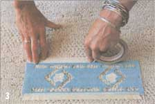

Entry-Level Stenciling
Establishing a new hobby, including materials, directions, project notes.
By Michelle Silver
October/November 1994
HANDWORKS
Michelle Silver
Transform household items into works of art for under $15.
Stenciling is the art of painting over a design cutout so that the design is reproduced onto the object underneath it. If there's one thing I learned after a morning of stenciling, it's that there's no excuse for not doing it yourself. It's quick, ridiculously cheap, and virtually mistake-proof.
Lynn Bittner, who has made a part-time business out of stenciling for the past ten years, showed me the basics. You grab some brushes, a pattern, and some paint - all under $15 - and then stencil your way to a new desk, hat, rug, or kitchen wall in a few hours.
According to Lynn, when it comes to stenciling there are only a few practical tips that you should remember. Take your time choosing the colors of your design because once they're on, they're there to stay. Go slowly and fill in all of the surface areas because it's hard to go back and realign the pattern once you've removed it. And above all else, use your paint sparingly. Start with the smallest amount possible and continue building your way up. The number one mistake in this craft is using too much paint and causing blurry edges or smudges in your pattern.
"If you do make a mistake," says Lynn, "there are plenty of ways to fake it. Say a dot of paint splashes under your first pattern. All you have to do is continue to paint that exact dot under each pattern. No one will ever know you didn't mean it."
For first timers, Lynn recommends starting with very simple patterns, such as ivy or large flower borders. Stay away from precise linear patterns, such as the classic "early American house" stencil, as it calls for exactitude.
Lynn and I chose to create a southwestern design on a small cotton rug. I was struck by how quickly we could turn a bland piece of fabric into beautiful artwork that could enhance, even create, a room theme. This is not a free-form craft, if that's what you're looking for. But you do get professional-looking results for low cost in almost no time.
The problem with stenciling is that once you learn how to do it, you have to learn how to stop. Remember that while you do want to stencil cabinets, sneakers, and bookshelves, you should probably stay away from the dog and children.
Materials
- Stencils (craft store or mail-order catalog); $3 to $6 for average stencil, $30 to $40 for more ornate ones.
- Stencil brushes (craft store); $1.75 to $6. Note: Buy separate brushes for each color. The size of the brush depends on the width of the cutouts in your pattern.
- 2-oz bottles of acrylic, water-based paint (craft store); 60 to 70 cents per bottle. Note: Don't just pick your favorite colors; make sure they match the color scheme of the room in which you plan to have the stencil appear. Avoid peach or neutral colors, which don't show up well on light surfaces.
- Small paper plates
- Paper towels
- Masking tape
Directions
Put your stencil pattern on the starting point of your project and place masking tape around the sides to hold it in place. Also put tape over the holes in the pattern that you want to reserve for another color.
Squeeze a small dollop of paint onto a paper plate and place a paper towel beside it. Touch your brush to the paint, remembering to use as little as possible and to brush off the excess onto the paper towel.
Note: If you've never stenciled before, practice painting with your stencil on a piece of paper first. While the paper won't absorb as much paint as a rug or wall, you will start to get a feel for how much (or little) paint you need, and for other details, like how the brush angle affects the look.
Fill in the pattern with your brush using a brisk circular motion, as if drawing tiny circles. Make sure that you paint all the way to the edges so that your pattern will have a definite shape.
If you plan to use different shades of one color, go lightly on the first layer. For example, if you are using an ivy pattern and wish to have leaves that are dark in the center and faded at the tips, paint a light layer on the whole leaf and then build up darkness in the center.
The paint dries immediately, so when you're ready for the next color, remove the tape from appropriate cutouts and paint with new color as you did before. When your whole pattern is filled, remove the stencil, line it up next to the first pattern, tape it, and stencil. Continue repeating this process until your project is complete.
When finished, clean the stencils in warm soapy water. Put a rubber band around the bristles of the brushes so they don't lose shape and soak them too.
Notes for Specific Projects
For bureau, table, desk, etc.
Sand furniture before stenciling so that your pattern will go on smoothly. If you want to paint or stain the piece first, use only a flat paint (no gloss).
For wall trim
Pick a pattern that will flatter the size of the room. For instance, you don't want to overwhelm a very small pantry by using a giant pumpkin stencil.
Tape a folded paper towel (used for wiping off excess paint) onto the wall so that you don't have to keep climbing up and down the ladder.
To make sure your trim will be even all around, start your pattern approximately 2" down from the ceiling. When you move to the next space, use both a ruler and a level to make sure that your pattern is even. It's hard to keep your perspective when you're on top of a ladder. Also use the level if you want the trim by the floor. In many houses the floor is not perfectly straight.
If possible, plan on ending your pattern in an inconspicuous place, like above a door or behind the refrigerator or cabinet. That way no one will notice if you only have enough room to end your stencil with half of the original pattern.
If you are stenciling on a wall that gets dirty easily, such as in the bathroom or kitchen, spray the finished pattern with polyurethane. Then the pattern won't wipe off when you wash the wall.
For rug
Use a plain cotton rug for stenciling and plan to use more paint than usual because the rug will absorb lots of it.
For clothes
Machine wash regularly.
For more information, call Lynn Bittner, Tumbleweed Creations, 303-499-2233.
 1.One trip to the craft store and you'll have all that you need to begin. |
2. Before applying paint to the item you want to stencil, practice on a rag or paper towel until you get a feel for the brush |
3. Tape down the entire length of the stencil, not just the corners. |
|
 4. Use small, circular motions and apply the paint evenly, concentrating on filling the edges completely. |
|
|